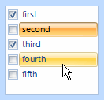
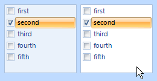
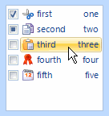

KryptonCheckedListBox
Use the KryptonCheckedListBox when you need to present the user with a list of items that have associated check mark state. Use the SelectionMode property to determine how many items can be selected at a time. Set the CheckOnClick property if you require the checked state to toggle whenever the use clicks an item. Hook into the SelectedIndexChanged event to be notified when the selected item is changed.
Appearance
Use the BackStyle, BorderStyle and ItemStyle properties to alter the appearance of the control and the list items. The first two of these properties define the appearance of the overall control but the ItemStyle is used to define the display of the individual list items themselves. You can see in figure 1 the default appearance using the Office 2007 - Blue builtin palette.

Figure 1 – Default Appearance
Eight States
There are eight different states relating to the control but not all the states are relevant to every part of the control.
The border and background of the control use just the StateNormal, StateDisabled or StateActive sets of properties. If the control has been disabled because the Enabled property is defined as False then the control always uses the StateDisabled values. When the control is active the StateActive properties are used and when not active the StateNormal. Being currently active means it has the focus or the mouse is currently over the control. Note that if the AlwaysActive property is defined as True then it ignores the StateNormal and always uses the StateActive regardless of the current active state of the control.
Drawing of the individual list items uses all the state properties except StateActive. This is because the list items are not drawn differently depending on the active state of the control. All the states that begin with the StateChecked name are used for items that are currently selected. When not selected an item uses one of the StateNormal, StateTracking or StatePressed properties.
Common State
To speed up the customization process an extra StateCommon property has been provided. The settings from this are used if no override has been defined for the state specific entry. Note that the specific state values always take precedence and so if you define the border width in StateNormal and StateCommon then the StateNormal value will be used whenever the control is in the Normal state. Only if the StateNormal value is not overridden will it look in StateCommon.
Imagine the following scenario; you would like to define the border of the button to be 3 pixels wide with a rounding of 2 pixels and always red. Without the StateCommon property you would need to update the same three border settings in each of StateDisabled, StateNormal, StateTracking etc properties. Instead you can define the three border settings in just StateCommon and know they will be used whichever of the states the checked list box happens to be using.
Focus Override
If the control currently has the focus then the OverrideFocus settings are applied to the item that has the focus indication. This can occur when the control is in Normal, Tracking or Pressed states. By default the override only alters the appearance so that a focus rectangle is drawn around the list item contents so that the user can see that the control currently has the focus.
AlwaysActive
This property is used to indicate if the control should always be in the active state. For an InputControlStyle of Standalone the default value of True is appropriate. However, when you switch to using the InputControlStyle of Ribbon you should alter this to False. A value of False means that when the mouse is not over the control and it also does not have focus it will be considered inactive. This allows you to specify a different appearance for the active and inactive states. Figure 2 shows an example of the Ribbon style with the AlwaysActive property defined as False. The left instance does not have the mouse over it and the right instance does.

Figure 2 – InputControlStyle - Ribbon
KryptonListItem
You can add any object to the Items collection and it will use the ToString() method to recover the text for display. Alternatively you can add expose the Krypton interface IContentValues from your object and instead it will show the triple set of values that the interface exposes, two text strings and an image. To simplify the process you can create and add instances of the KryptonListItem class that exposes that interface for you. Figure 3 shows an example with several instances of this class added to the Items collection.

Figure 3 – Items collection containing KryptonListItem instances